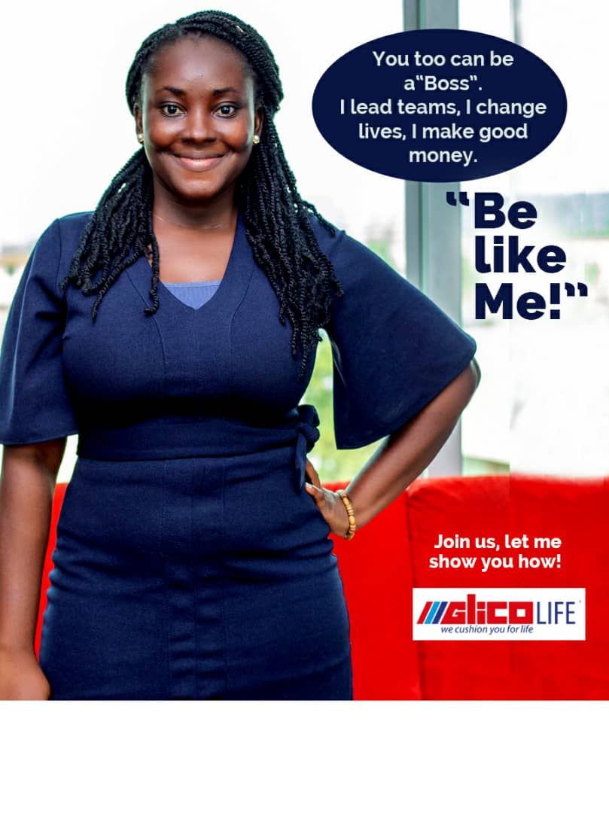

Bobby Bank Ghana Limited is part of Prestigious Group Limited, an African financial services group that aims to be the pride of the continent. Prestigious Group Limited is listed on the JSE in West Africa and is one of Africa’s largest diversified financial services groups with a presence in 12 countries across the continent and around 42,000 employees.
We’re committed to finding local solutions to uniquely local challenges and everything we do is focused on adding value. To this end, we offer our clients a range of retail, business, corporate and investment, and wealth management solutions. We also ensure a positive impact in all the countries where we operate.
We’re a truly African brand, inspired by the people we serve and determined to always be brave, passionate and ready so that we can make our continent proud.